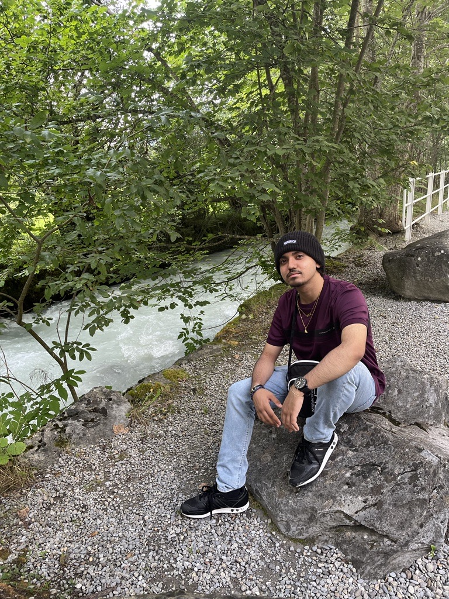
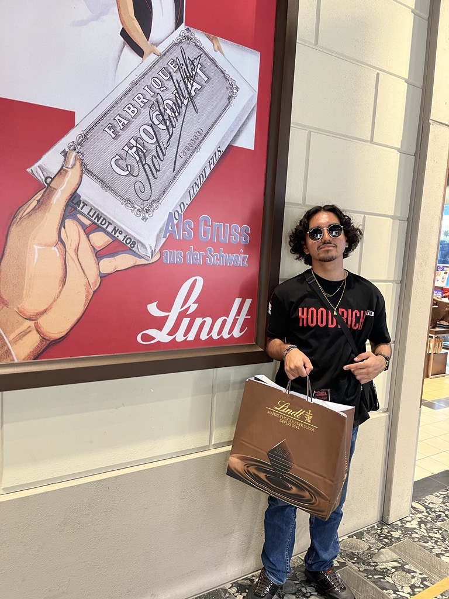
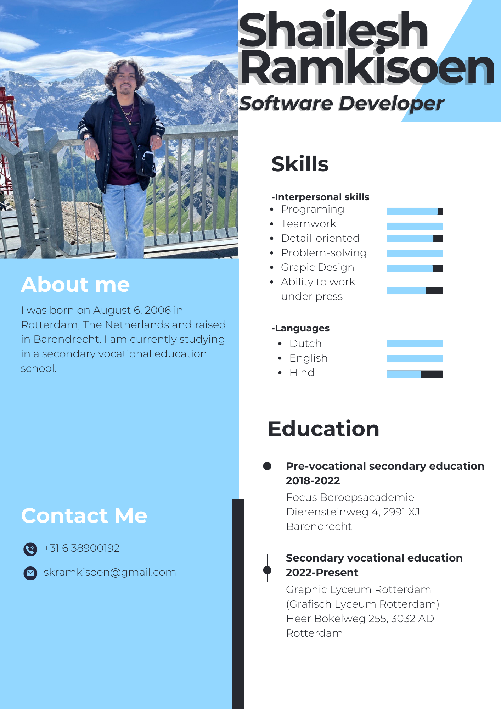

About/CV
Home
Projectpagina
About
Contact
Op deze pagina vind je meer informatie over mij!

Zoals ik al had verteld mijn naam is Shailesh Ramkisoen, ben geboren op 6 Augustus 2006 en ben 17 jaar oud. Ik ben geboren in Rotterdam en woon in Barendrecht samen met mijn vader en broer, mijn nationaliteit is Surinaams/Indiaas.

Dingen die ik leuk vind om te doen zijn: eten, slapen, met vrienden of familie uitgaan, af en toe gamen en lezen. Lezen is iets wat ik heel erg leuk vind en kan ik uren in doorbrengen. Ook ben ik erg sociaal met iedereen, ik vind het altijd wel leuk om een praatje te maken met iedereen.
Dit is mijn CV
